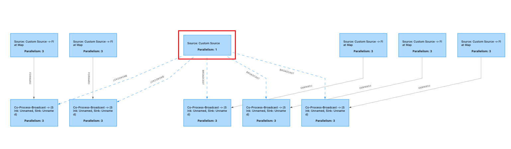
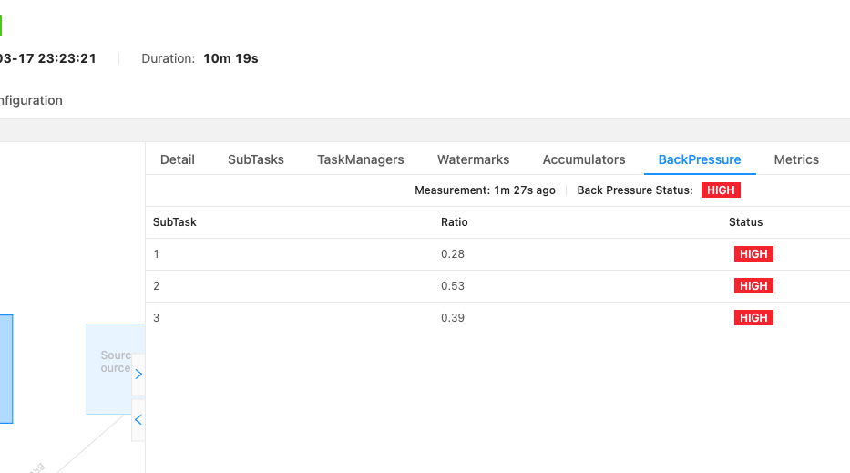
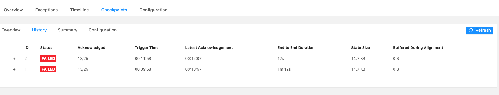
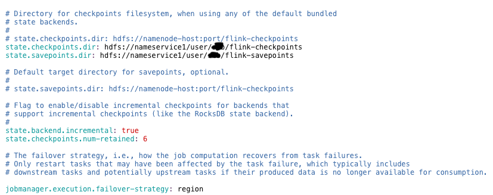
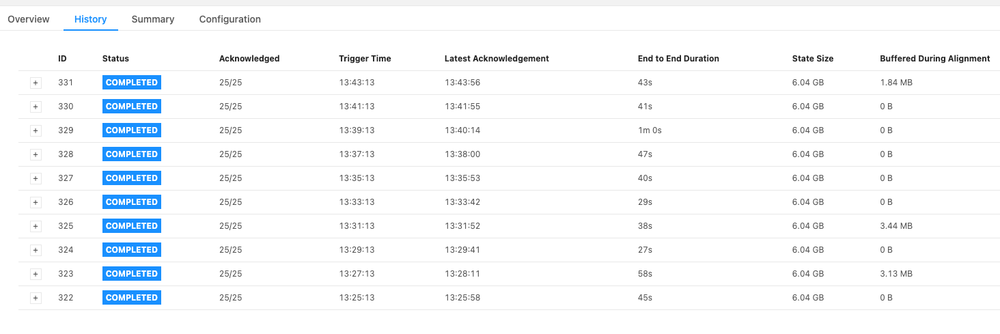
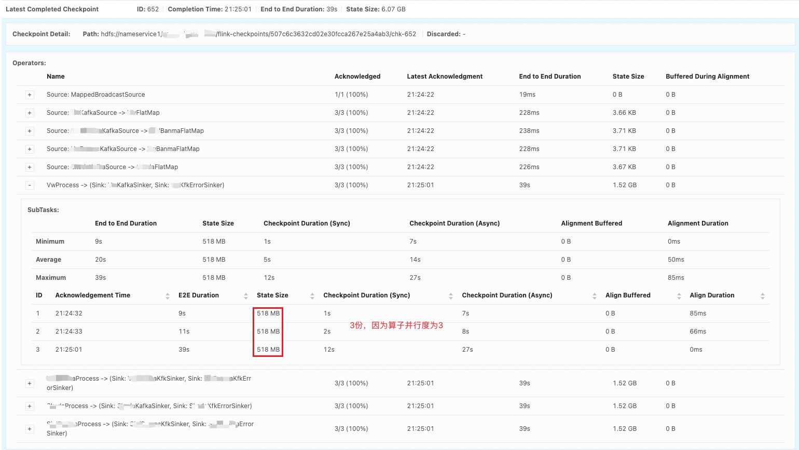

14. [Flink]关于Flink的Checkpoint的一次问题排查
14.1. 问题背景
14.1.1. 版本说明
Flink-1.10.0
14.1.2. 背景
最近接手的一个Flink项目由于checkpoint一直失败导致数据积压，从而导致监控任务持续告警，从分析排查的过程中，给了我对Checkpoint的新的认识。
该Flink任务的DAG图如下所示：

红色框中是Brocast算子，定时周期性地将查询到的一个具有九百万数据量的Map广播到其他几条流上，Source从Kafka消费数据，Process算子处理数据，Sink端再写到Kafka。
某一天任务告警，Kafka的offset存在严重的LAG，从Flink的WebUI上看到了严重的背压，日志中提示：
2023-03-17 13:37:12
org.apache.flink.streaming.connectors.kafka.FlinkKafka011Exception: Failed to send data to Kafka: Expiring 7 record(s) for xxxxxx_topic-0: 61981 ms has passed since last append

并且Checkpoint也一直失败,或者是一开始checkpoint成功了，但是到后面checkpoint却失败了，并且一直失败。

14.2. 问题定位过程
14.2.1. 生产者问题
报错的日志中可以看出是Sink到Kafka的Producer出了问题，百度搜索一番后调大了两个配置：
properties.put("batch.size", 655360); //640K
properties.put("linger.ms", 5); //0ms
原本以为可行，后来还是不行。
14.2.2. 数据积压
持续观察任务，还是依旧的错误，观察Kafka的topic的offset后发现了大量的数据没有被消费，产生了严重的LAG。
从消费速率入手考虑，一定是算子的处理速度跟不上源端摄取数据的速度，一步一步堆叠往上，由于Flink的背压机制，导致源端摄取的速度变慢，最终导致Kafka Topic的Lag持续上涨。
**从普遍可以思考到的优化方向考虑，增大Flink每个算子的并行度一定可以提高处理速度，从而使得消费速度提高，从而减少数据积压。**于是提高了任务的并行度，设置每个算子默认的并行度为3，速度确实提高了，可是不出意外的话，还是出了意外，观察了一会儿过后，发现数据积压的现象并没有得到解决。
为什么？
夜已经很晚了，我盯着Flink的WebUI看着那几个红色的HIGH陷入了沉思，为什么？我不理解。
14.2.3. 检查点失败
通过思考Flink消费Kafka实现Exactly-Once的原理的时候想到，为了确保exactly-once一致性语义，flink会有两阶段提交，会在检查点创建的时候提交Kafka的offset，如果任务失败，也可以从最近的检查点恢复，从而不会丢失数据。难道是Flink的检查点并没有成功创建，从而没有提交offset？
果然！
在Flink的WebUI上我发现了：
检查点如期开始，只是都失败了。
1、难道是该任务没有设置CHK？
2、难道是没有设置CHK目录？
经检查发现，上述两点都不满足，代码设置了开启检查点，并且flink-conf.yml文件中也设置了检查点目录。
final StreamExecutionEnvironment env = StreamExecutionEnvironment.getExecutionEnvironment();
env.enableCheckpointing(10*60*1000L);

14.2.4. 观察日志
无从下手的时候，多看日志。于是我在日志中发现了这些告警信息：
2023-03-18 02:20:33.877 [Checkpoint Timer] INFO org.apache.flink.runtime.checkpoint.CheckpointCoordinator - Triggering checkpoint 2 @ 1679077233860 for job 44ec04da13306281d7a8da2c808d5b71.
2023-03-18 02:21:03.057 [jobmanager-future-thread-19] INFO org.apache.flink.runtime.checkpoint.CheckpointCoordinator - Decline checkpoint 2 by task be2e6a80e37d5c4ae0fbf9a4d30db27e of job 44ec04da13306281d7a8da2c808d5b71 at container_e26_1666786585431_638207_01_000003 @ svlhdp003.csvw.com (dataPort=40778).
2023-03-18 02:21:03.061 [jobmanager-future-thread-19] INFO org.apache.flink.runtime.checkpoint.CheckpointCoordinator - Discarding checkpoint 2 of job 44ec04da13306281d7a8da2c808d5b71.
org.apache.flink.util.SerializedThrowable: Could not materialize checkpoint 2 for operator AProcess -> (Sink: AKfkSinker, Sink: AKfkErrorSinker) (1/3).
at org.apache.flink.streaming.runtime.tasks.StreamTask$AsyncCheckpointRunnable.handleExecutionException(StreamTask.java:1238) ~[flink-xxxxxxxxx-1.0-SNAPSHOT-jar-with-dependencies.jar:na]
at org.apache.flink.streaming.runtime.tasks.StreamTask$AsyncCheckpointRunnable.run(StreamTask.java:1180) ~[flink-xxxxxxxxx-1.0-SNAPSHOT-jar-with-dependencies.jar:na]
at java.util.concurrent.ThreadPoolExecutor.runWorker(ThreadPoolExecutor.java:1149) ~[na:1.8.0_232]
at java.util.concurrent.ThreadPoolExecutor$Worker.run(ThreadPoolExecutor.java:624) ~[na:1.8.0_232]
at java.lang.Thread.run(Thread.java:748) ~[na:1.8.0_232]
Caused by: org.apache.flink.util.SerializedThrowable: java.io.IOException: Size of the state is larger than the maximum permitted memory-backed state. Size=540384834 , maxSize=5242880 . Consider using a different state backend, like the File System State backend.
at java.util.concurrent.FutureTask.report(FutureTask.java:122) ~[na:1.8.0_232]
at java.util.concurrent.FutureTask.get(FutureTask.java:192) ~[na:1.8.0_232]
at org.apache.flink.runtime.concurrent.FutureUtils.runIfNotDoneAndGet(FutureUtils.java:461) ~[flink-xxxxxxxxx-1.0-SNAPSHOT-jar-with-dependencies.jar:na]
at org.apache.flink.streaming.api.operators.OperatorSnapshotFinalizer.<init>(OperatorSnapshotFinalizer.java:53) ~[flink-xxxxxxxxx-1.0-SNAPSHOT-jar-with-dependencies.jar:na]
at org.apache.flink.streaming.runtime.tasks.StreamTask$AsyncCheckpointRunnable.run(StreamTask.java:1143) ~[flink-xxxxxxxxx-1.0-SNAPSHOT-jar-with-dependencies.jar:na]
... 3 common frames omitted
Caused by: org.apache.flink.util.SerializedThrowable: Size of the state is larger than the maximum permitted memory-backed state. Size=540384834 , maxSize=5242880 . Consider using a different state backend, like the File System State backend.
at org.apache.flink.runtime.state.memory.MemCheckpointStreamFactory.checkSize(MemCheckpointStreamFactory.java:64) ~[flink-xxxxxxxxx-1.0-SNAPSHOT-jar-with-dependencies.jar:na]
at org.apache.flink.runtime.state.memory.MemCheckpointStreamFactory$MemoryCheckpointOutputStream.closeAndGetBytes(MemCheckpointStreamFactory.java:145) ~[flink-xxxxxxxxx-1.0-SNAPSHOT-jar-with-dependencies.jar:na]
at org.apache.flink.runtime.state.memory.MemCheckpointStreamFactory$MemoryCheckpointOutputStream.closeAndGetHandle(MemCheckpointStreamFactory.java:126) ~[flink-xxxxxxxxx-1.0-SNAPSHOT-jar-with-dependencies.jar:na]
at org.apache.flink.runtime.state.DefaultOperatorStateBackendSnapshotStrategy$1.callInternal(DefaultOperatorStateBackendSnapshotStrategy.java:179) ~[flink-xxxxxxxxx-1.0-SNAPSHOT-jar-with-dependencies.jar:na]
at org.apache.flink.runtime.state.DefaultOperatorStateBackendSnapshotStrategy$1.callInternal(DefaultOperatorStateBackendSnapshotStrategy.java:108) ~[flink-xxxxxxxxx-1.0-SNAPSHOT-jar-with-dependencies.jar:na]
at org.apache.flink.runtime.state.AsyncSnapshotCallable.call(AsyncSnapshotCallable.java:75) ~[flink-xxxxxxxxx-1.0-SNAPSHOT-jar-with-dependencies.jar:na]
at java.util.concurrent.FutureTask.run(FutureTask.java:266) ~[na:1.8.0_232]
at org.apache.flink.runtime.concurrent.FutureUtils.runIfNotDoneAndGet(FutureUtils.java:458) ~[flink-xxxxxxxxx-1.0-SNAPSHOT-jar-with-dependencies.jar:na]
... 5 common frames omitted
其中有醒目的一行：
Size of the state is larger than the maximum permitted memory-backed state. Size=540384834 , maxSize=5242880 . Consider using a different state backend, like the File System State backend.
其中540384834为515M，5242880为5M
翻译一下：状态的大小超过了最大允许的内存持久化大小限制。请考虑使用别的状态后端，比如文件系统状态后端。
**关键啊！**思考一下，可能是由于在做检查点的时候，默认先放在内存，然后再往flink-conf.yml文件中配置的HDFS路径写入，但是由于状态太大了，超过了内存中限制的大小，所以失败了。（存疑）
14.2.5. 解决
抱着试试看的态度，我在代码中手动设置了状态后端的地址：
env.setStateBackend(new FsStateBackend("hdfs://nameservice1/path/to/checkpoint/dir"));
OK，上线运行！
成了！检查点成功创建！

再次观察Kafka的offset，LAG已经大为下降，再过几个小时后发现，LAG已经可以算没有了。
妥！
不用担心过多的检查点占用较大HDFS空间，Flink会周期性保存一定数量的检查点个数（默认为1），这个可以在flink-conf.yml文件中配置
state.checkpoints.num-retained: 10
再思考一下该程序的逻辑：四条流实时从上游Kafka拉取数据，每六个小时使用impala从Kudu全量拉取一下含有大量映射关系数据为map，再将映射关系的数据通过广播流广播到四条数据流上，四条流分别根据该数据实时查询再将处理完的数据发送至下游Kafka
合理！该程序的CHK的体积有惊人的6.05GB就可以理解了，在Process算子的CHK中保存了这些含有映射关系的数据，而这些数据达到了九百多万(粗略估计)。
清晰，太清晰了！
14.3. 总结
14.3.1. 剖析
检查点是所有算子状态的一个快照。而这些快找所要存储的位置就是状态后端。
Flink的flink-conf.yml文件中关于checkpoint的配置：
#==============================================================================
# Fault tolerance and checkpointing
#==============================================================================
# The backend that will be used to store operator state checkpoints if
# checkpointing is enabled.
#
# Supported backends are 'jobmanager', 'filesystem', 'rocksdb', or the
# <class-name-of-factory>.
#
state.backend: filesystem
# Directory for checkpoints filesystem, when using any of the default bundled
# state backends.
#
# state.checkpoints.dir: hdfs://namenode-host:port/flink-checkpoints
state.checkpoints.dir: hdfs://nameservice1/path/to/flink-checkpoints
state.savepoints.dir: hdfs://nameservice1/path/to/flink-savepoints
# Default target directory for savepoints, optional.
#
# state.savepoints.dir: hdfs://namenode-host:port/flink-checkpoints
# Flag to enable/disable incremental checkpoints for backends that
# support incremental checkpoints (like the RocksDB state backend).
#
state.backend.incremental: true
state.checkpoints.num-retained: 6
# The failover strategy, i.e., how the job computation recovers from task failures.
# Only restart tasks that may have been affected by the task failure, which typically includes
# downstream tasks and potentially upstream tasks if their produced data is no longer available for consumption.
jobmanager.execution.failover-strategy: region
上述配置中关键的有三个：
state.backend: filesystem
state.checkpoints.dir: hdfs://nameservice1/path/to/flink-checkpoints
state.savepoints.dir: hdfs://nameservice1/path/to/flink-savepoints
之前的Flink任务只配置了state.checkpoints.dir和state.savepoints.dir，这仅仅代表最终的CHK会存在这里，CHK的第一步(收集)的过程还是默认在JobManager的内存中完成，此时，state.backend的值默认为jobmanager
只有当配置了state.backend: filesystem，CHK的第一步才会直接往文件系统(HDFS)去写
上午三个配置是全局的，如果想针对任务去配置，可以在代码中配置：
streamExecutionEnvironment.setStateBackend(new FsStateBackend("hdfs://nameservice1/path/to/chk"));
在上述任务中，一开始仅仅配置了state.checkpoints.dir和state.savepoints.dir，并没有配置state.backend: filesystem,由于没有配状态后端，默认使用的是jobmanager的内存来盛放这些状态数据.
一开始任务可以成功做CHK，所有的算子的数据状态比较小，内存可以放得下，当内存可以放下所有算子的状态(包含被广播的数据)时，jobmanager首先收集状态数据开始做checkpoint，当checkpoint成功后，程序成功运行并且向Kafka提交offset，然后再将原先放在jobmanager内存中的状态数据刷写保存到state.checkpoints.dir所指定的路径中。此时从WebUI上看checkpoint是成功的。
到了后来，随着业务数据增长，被广播的数据量越来越大，内存已经放不下了，算子的状态大小超出了允许的大小限制(5Mb),这使得checkpoint不成功，所以也无法将状态数据保存到状态后端，所以使得消费kafka得topic的offset无法被提交，只要flink任务重启，都还会从之前的offset继续消费，长此以往，就导致了严重的LAG，也就导致了flink端有大量的数据需要消费和处理，由于速率跟不上，就产生了严重的背压。

成功配置文件系统的状态后端，让checkpoint可以成功执行，消费kafka的topic的offset可以成功提交，解决了该问题。
14.3.2. 拓展
使用广播变量算子(Broadcast)并开启了CHK时，所有的task都会广播内容的数据写入CHK。
All tasks checkpoint their broadcast state: Although all tasks have the same elements in their broadcast state when a checkpoint takes place (checkpoint barriers do not overpass elements), all tasks checkpoint their broadcast state, and not just one of them. This is a design decision to avoid having all tasks read from the same file during a restore (thus avoiding hotspots), although it comes at the expense of increasing the size of the checkpointed state by a factor of p (= parallelism). Flink guarantees that upon restoring/rescaling there will be no duplicates and no missing data. In case of recovery with the same or smaller parallelism, each task reads its checkpointed state. Upon scaling up, each task reads its own state, and the remaining tasks (
p_new-p_old) read checkpoints of previous tasks in a round-robin manner.
所以，并行度为p，广播算子内容就会p倍被存储至状态后端指定的文件系统。
所以，以上述JobGraph图来看，广播算子将数据广播到了下游的4个算子上(文最开始引用的图不是最终的，实际下游只有4个算子)，每个算子的并行度是3，那么一共的并行度为4*3=12，同时每一份被广播的数据大小为518Mb(成功执行的CHK的详情种可以看得到), 那么数据一共是12*518MB/1024Mb=6.07GB